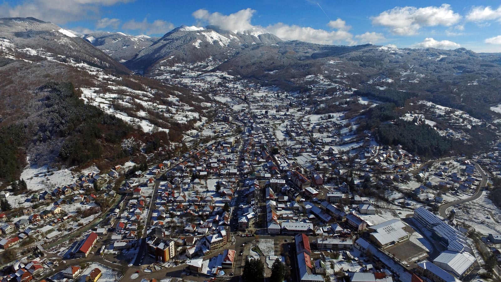

| 1. |
Bijelo Polje |
Sjeverna |
12900 |
- Gušmirska džamija
- Nikolajevska crkva
- Pećina Osoja
|
|
| 2. |
Cetinje |
Centralna |
13900 |
- Dvorac Kralja Nikole
- Biljarda
- Njegošev mauzolej
|
 |
| 3. |
Danilovgrad |
Centralna |
16523 |
- Umjetnička kolonija
- Zavičajni muzej
- Speleološki lokaliteti
|
|
| 4. |
Herceg Novi |
Južna |
10156 |
- Kanli Kula
- Kula Balšića
- Citadela
|
|
| 5. |
Kolašin |
Sjeverna |
2700 |
- NP Biogradska gora
- Kamena rijeka
- Kapetanovo jezero
|
 |
| 6. |
Kotor |
Južna |
22900 |
- Katedrala Svetog Tripuna
- Palata Prima
- Pomorski muzej
|
|
| 7. |
Nikšić |
Centralna |
75000 |
- Crvena stijena
- Bedem
- Dvorac Kralja Nikole
|
|
| 8. |
Pljevlja |
Sjeverna |
30786 |
- Manastir svete Trojice
- Husein pašina džamija
- Meandri Ćehotine
|
|
| 9. |
Podgorica |
Centralna |
187085 |
- Crnogorski Nijagarini vodopadi
- Muzej
- Ruševine Duklje
|
|
| 10. |
Ulcinj |
Južna |
20290 |
- Stari grad
- Kula Balšića
- Citadela
|
|